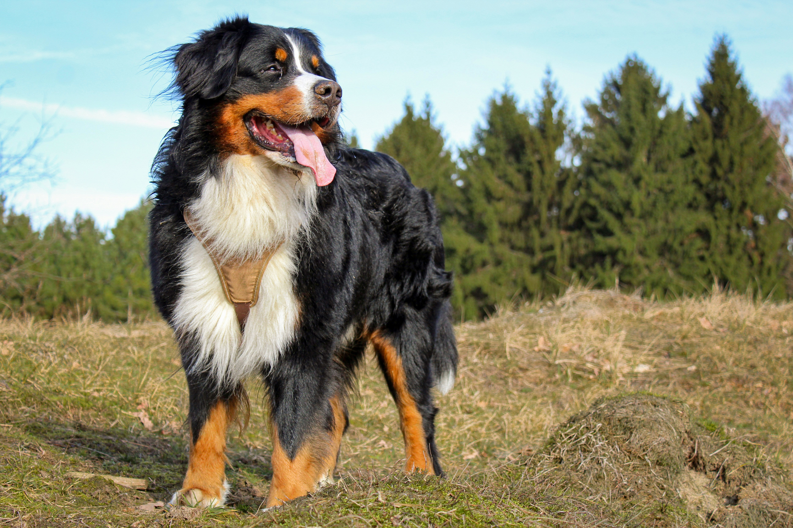

- Golden Retriever
- Border Collie
- Bernese Mountain Dog
- Norwegian Forest
- Siberian Forest
- American Curl
About Bernese Mountain Dogs!

History of Bernese Mountain Dogs
Bernese Mountain Dogs were originally bred in the Swiss Alps for tasks such as pulling carts,
herding cattle, and serving as all-around farm dogs. Their strength and gentle nature made them
invaluable to the farmers of the mountainous regions of Switzerland.
Characteristics
Bernese Mountain Dogs are large, with a calm and affectionate temperament and a striking tri-colored coat.
They are known for their loyalty and are excellent family pets, though their thick, long coats require regular grooming.
Work and Play
These dogs enjoy tasks and are good at weight pulling and agility due to their working dog heritage.
They are well-suited to colder climates and enjoy participating in outdoor activities.
Cautions
Bernese Mountain Dogs typically have a shorter lifespan than many other breeds, often only living 7 to 8 years.
They are prone to musculoskeletal issues and cancer, making regular health check-ups important.
Common Health Issues
Like many large breeds, Bernese Mountain Dogs are susceptible to hip and elbow dysplasia, and various forms of cancer.
Early detection and proper care can help extend their life and improve their quality of life.